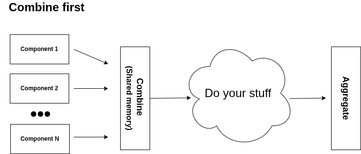
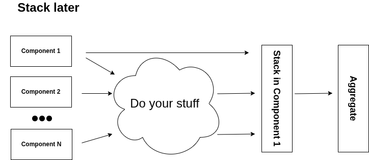

Federation
This section explains how to use the federation setup. For a component to support federation, it must implement the following methods:
def to_binary(self) -> bytes | None:
"""(Federation only) Serialize to bytes for federation operations."""
def from_binary(self, binary: bytes) -> object:
"""(Federation only) Deserialize from bytes for federation operations."""
def aggregate_strategy(self, components: set["FedOperations"]) -> None:
"""(Federation only) Define how to aggregate a set of federated components."""
There are two main ways to use federation:
- Combine first: This can only be used when all components run locally. The main idea is to simplify the process by allowing components to share memory.
- Stack later: A more standard federated approach where the "weights" or state of each component are combined at the end.
Example class
For all the examples below, we will use this code:
from detectmatelibrary.common.core import CoreComponent
import struct
class NewComponent(CoreComponent): # Inherent from CoreComponent
def __init__(self, elems):
self.elems = elems
super().__init__(name="FedExample")
def aggregate_strategy(self, components):
final_list = []
for component in components:
final_list.extend(component.elems)
final_list = list(set(final_list))
for component in components:
component.elems = final_list
def to_binary(self):
return struct.pack(f">{len(self.elems)}h", *self.elems)
def from_binary(self, binary):
num_ints = len(binary) // 2
elems = list(struct.unpack(f">{num_ints}h", binary))
return NewComponent(elems=elems)
Combine first
The diagram below shows the workflow:

Example 1:
detector1 = NewComponent([1, 2, 3])
detector2 = NewComponent([4, 5])
detector3 = NewComponent([6])
detector1 + detector2 + detector3
detector2.aggregate() # Detector 2 is used as centralize node
print("Dectector 3", detector3.elems) # All detectors have been updated
Example 2:
detector1 = NewComponent([1, 2, 3])
detector2 = NewComponent([4, 5])
detector3 = NewComponent([6])
detector1 + detector2 + detector3
detector2.aggregate() # Detector 2 is used as centralize node
print("Dectector 3", detector3.elems) # All detectors have been updated
Stack
The diagram below shows the workflow:

Example 1:
detector1 = NewComponent([1, 2, 3])
detector2 = NewComponent([4, 5])
detector3 = NewComponent([6])
detector1.stack([detector2, detector3])
detector2.aggregate()
print("Detector 3", detector3.elems) # It is not longer combine but stack, so it will not work
detector1.aggregate()
print("Detector 3", detector3.elems) # Now it will work
Example 2:
detector1 = NewComponent([1, 2, 3])
binary2 = NewComponent([4, 5]).to_binary()
binary3 = (detector3 := NewComponent([6])).to_binary()
print("Binary of Detector 3", binary3)
detector1.stack([binary2, binary3])
output = detector1.aggregate(unstack=True) # unstack = True will free memory
print("Detector 1", detector1.elems) # Detector 1 has been updated
print("Output binary", output) # Output that we send to other componets
# We update detector 3 now
print("Detector 3", detector3.elems) # Now detector 3 is not in the share memory so it will not work
detector3 = detector3.from_binary(output)
print("Detector 3", detector3.elems) # Now it will work